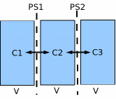

This document describes some basics techniques for using ordinary differential equations (ODEs) within MML models.
Prerequisites:
Contents:
MML uses the colon (:) to represent differentiation (for example u:t represents du/dt). This construct is used in formulating ODEs in MML. Consider the following model of radioactive decay:
JSim requires an ODE variable (here "u") be given an "initial condition (IC)" and a "state equation". The IC constrains the initial value by applying the "when" clause. In the example, the simplest possible constraint is used, that is, setting the numeric value. In more complicated systems, ICs may be calculated from other model variables. The state equation constrains the variable's first derivative (here "u:t") for all time. (For simplicity, the word "time" is used in this document to refer to an ODE variable's domain, however ODE variable domains be assigned any unit appropriate to the model.)
If you run the above model in the JSim GUI, you will discover that JSim creates a new IC variable u__init with default value 1 (matching the MML equation). This allows you to change the IC in the GUI without recompiling the model. If the IC for an ODE variable is calculated from other variables, the initial value will not be directly changable within the GUI.
Note that IC's when clause must be formulated as "t=t.min". You may not use "t=0" or any other specific numeric value in an IC.
Consider the following model of diffusion between 3 compartments:
Note that each of the three ODE variables (C1, C2, C3) has both an initial condition (specified via the "when" clause) and a state equation. The number of such equation in a JSim model is limited only by computer memory, not by JSim itself.
2nd (and higher) order ODEs may be solved in JSim. A Nth order ODE require N initial conditions (for u, u:t, ...). The following example that generates a sinusoid via a 2nd order ODE:
You may use linear or non-linear implicit equations to specify ODE ICs or state equations. Consider the following example using linear implicit equations to specify both ICs and state equations:
Here JSim will solve u and v at t=t.min via the two implicit equations in the when clause, and solve u:t and v:t via the last two equations. There are a number of tricky issues regarding implicit equations in MML. Model writers are strongly advised to read Implicit Equations in MML completely before using this construct in their own models.
In some cases, you may wish to create a set of ODE variables that share a common form. The following code models flow through N parallel compartments:
Here a realDomain "n" is introduced to parameterize the N parallel variables. N is initially set to 5, but may be easily changed in the JSim GUI. The ODE variable C now takes both time and "n" as domains, and the IC and state equations apply to each value of "n". This approach make for more concise and efficient code when a set of variables share a common equation form, differing only in parameter values. In this case, compartment volume (V) varies over "n".
Special notes:
The following code models flow through a series of N compartments:
Most of the code is similar to the parallel example. The state equation uses MML's "if/else" construct to compare a compartment's concentration to its predecessor's. The 1st compartment is compared to the input (Cin).
The final "when" statement calculates Cout from the value of C at maximum n. This "when" construct is preferred to following which, although possible, is not recommended due to technical reason:
Cout=C(t,N);
An MML ODE variable is inherently continuous, since it is calculated from the integral of a real-valued function. Certain physiological systems, such as gate openings and closings, are inherently discontinuous. Events are MML's construct for such discrete changes. See Using Events in MML for complete details.
[This page was last modified